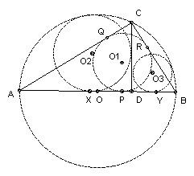

C is a point on the semicircle diameter AB, between A and B. D is the foot of the perpendicular from C to AB. The circle K1 is the in-circle of ABC, the circle K2 touches CD, DA and the semicircle, the circle K3 touches CD, DB and the semicircle. Prove that K1, K2 and K3 have another common tangent apart from AB.
Solution

Let the three centers be O1, O2 and O3. We show that O1 is the midpoint of O2O3. In fact it is sufficient to show that O1 lies on O2O3, because then we can reflect the known tangent AB in the line O2O3.
As usual, let AB = c, BC = a, CA = b. Let the in-circle touch AB at P, AC at Q and BC at R. Then since angle ACB = 90, O1QCR is a square. Also AQ = AP and BP = BR, so r1 = b - AP, and r1 = a - BP = a - (c - AP). Adding: r1 = (a + b - c)/2, and AP = (b + c - a)/2.
Let the circle center O2 touch AB at X, and the circle center O3 touch AB at Y. Let O be the midpoint of AB. Now consider the right-angled triangle OXO2. Since the circle center O2 touches the semicircle, OO2 = c/2 - r2. OX = OD + DX = (c/2 - AD) + r2. Also, by similar triangles, AD = b2/c. So, using Pythagoras: (c/2 - r2)2 = r22 + (c/2 - b2/c + r2)2. Multiplying out and rearranging: r22 - 2r2(c - b2/c) - (b2 - b4/c2). But ABC is right-angled, so c2 = a2 + b2, and hence c - b2/c = a2/c and b2 - b4/c2 = a2b2/c2. So r22 + 2r2 a2/c - a2b2/c2 = 0, which has roots r2 = a - a2/c (positive) and - a + a2/c (negative). So r2 = a - a2/c. Similarly, r3 = b - b2/c. So O2X + O3Y = XY = r2 + r3 = a + b - c = 2 r1.
XP = AP - AX = AP - (AD - DX) = (b + c - a)/2 - (b2/c - r2) = (b + c - a)/2 - (c - a) = (a + b - c)/2 = r1. We now have all we need: XP = PY = PO1, and XO2 + YO3 = 2 PO1.

Solutions are also available in: Samuel L Greitzer, International Mathematical Olympiads 1959-1977, MAA 1978, and in István Reiman, International Mathematical Olympiad 1959-1999, ISBN 189-8855-48-X.
© John Scholes
jscholes@kalva.demon.co.uk
5 Oct 1998
Last corrected/updated 27 Oct 2002